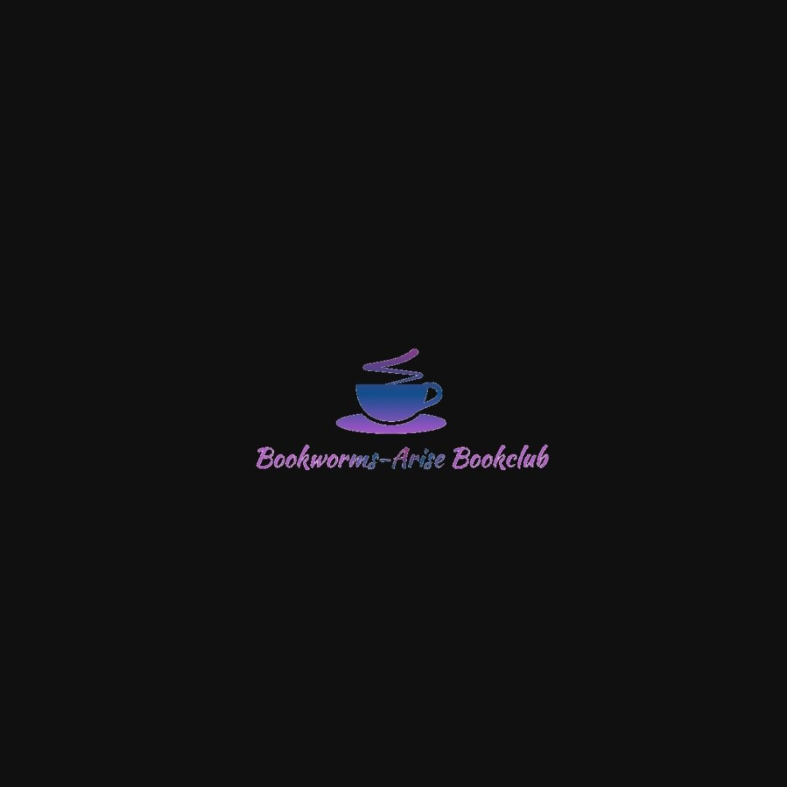
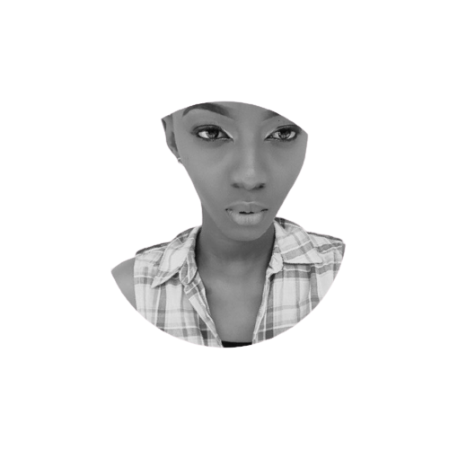

This was our first official logo for the club founded on the 16th day of October, 2017 by Ms. Omolola Odunowo.
Our Journey

Our first meetup took place on the 25th day of November, 2017 in Lagos, Nigeria.
By early 2019, our Bookclub had already established and hosted meetups in about 5 states in Nigeria.
Past and Present Team Members
Omolola Odunowo
Founder,
Bookworms Arise
Seun Lawson
Head Moderator,
Bookworms Arise Online

Busayo Onikosi
Head Moderator,
Bookworms Arise
Lagos Mainland

Christabell Kadiri
Head Moderator,
Bookworms Arise
Lagos Island
Emmanuel Hackel
Head Moderator,
Bookworms Arise Adamawa

Sandra Kosi
Head Moderator,
Bookworms Arise Enugu
Taiwo Abdulrasaq
Asst. Head Moderator,
Bookworms Arise Online
Itunu Omowande
Asst. Head Moderator,
Bookworms Arise Online

Daniel Iyanda
Head Moderator,
Bookworms Arise Abuja
Tolu Ogundipe
IT Consultant,
Bookworms Arise
Yinka Yusuf
Head Moderator,
Bookworms Arise Kwara
Mrs. X
Asst. Head Moderator,
Bookworms Arise Abuja

Then Covid-19 happened, this reset the world and our minds. It reminded us of all the time spent shaping lives through reading. Our management decided to take a much needed break after 3 years of voluntary service to the Bookclub.
On the 10th of May, 2021 our management rebranded and kickstarted a restructured Bookclub still set on bringing the reading culture to youths but with a larger target in mind; the African continent.